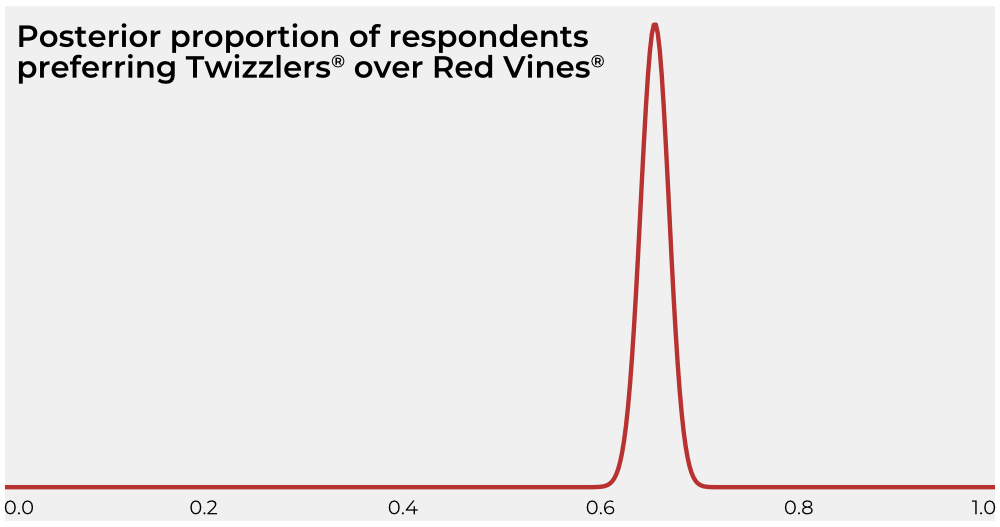

Due Thurs, Jan 17
A new study (funded by The Hershey Company) claims to have shown unequivocally that people prefer Twizzlers candy to Red Vines. The study says that its survey proves that more than 60% of the population believes Twizzlers to be the superior candy, using the following figure to bolster their claim:

In light of the study’s conflict of interest (Hershey owns Twizzlers), you decide to investigate. The study gives links to the raw survey data and to a grid approximation of the posterior shown in the figure, but there is no information about what prior they used other than calling it “reasonable.” You believe you can use the information they did provide reconstruct the prior.
surv <- read.csv('https://mcmahanp.github.io/soci620/assignments/01/twizz_data.csv')
post_grid <- read.csv('https://mcmahanp.github.io/soci620/assignments/01/twizz_posterior.csv')surv and calculate the sample size and absolute number of respondents who preferred Twizzlers. Report both of these numbers—does the claim made in the study seem reasonable in light of the survey results? (2 points)post_grid (you will probably want to use the dbinom() function). Plot the likelihood. Comparing the raw likelihood to the posterior published in the study, what do you suspect about the prior they might have used? (2 points)post_grid to calculate values that are proportional to the prior used in the study. (Hint: if A ∝ B × C, then C ∝ A/B.) Plot this prior. Does this look like a “reasonable” prior to you? Why or why not? (3 points)